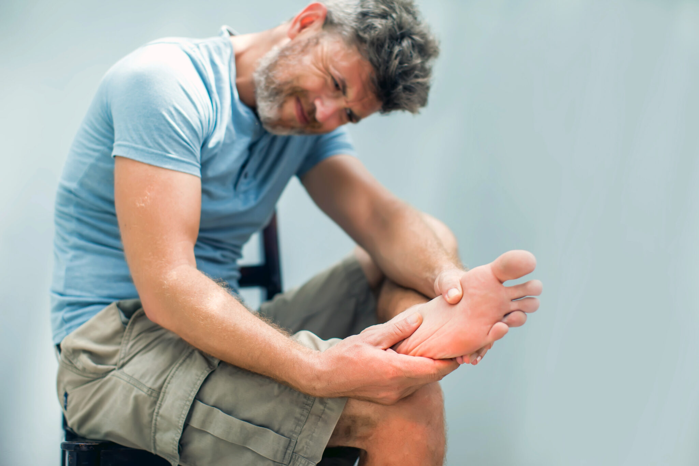

Be Sweet to Your Feet: 7 Tips for Good Foot Health
posted by Damaris | Date April 11, 2024
April is National Foot Health Awareness Month. Put your best foot forward with these easy tips for at home foot care.
- Keep feet clean and dry. Wash your feet every day and dry completely.
- Check feet regularly for cuts, sores, swelling, dryness, and infected toenails. Apply treatment as needed.
- Don’t wear the same pair of shoes for two or more days in a row. Allow shoes to dry out before wearing again.
Change socks daily. - Choose the right shoes. Avoid narrow shoes that squeeze toes together and high heels. Narrow shoes can squeeze
the foot and aggravate deformities such as bunions or hammertoes. - If you have foot issues, choose lace-up shoes over slip-ons. Lace-ups provide increased adjustability for a
snugger fit that reduces friction, as well as offering more stability to the heel. - Trim toenails straight across. Cut them so you can see a bit of skin just above the nail edge. If you trim them
in a curve or too short, the edge of the nail may grow into the skin and cause an ingrown toenail. Don’t let
toenails grow so long that they extend past your toes. - If visiting a salon for foot care, choose one that is clean and licensed by the state cosmetology board. Nail clippers,
scissors, and other tools should be sterilized after each use.
Walking Woes
Valley’s podiatrists offer surgical and non-surgical management of foot and ankle conditions for all ages including:
- Ankle sprain
- Arthritis
- Bone spurs
- Bunions
- Bursitis
- Fracture care
- Ganglion cyst and soft tissue masses
- Tendon and ligament injuries
- Peripheral artery disease
- Heel pain/plantar fasciitis
- Ingrown toenails
- Wound care
About The Author
Valley Communications
Valley Medical Center's Marketing and Community Outreach Office
2 Comments
Charlene Rouse
your link valleymed.org/ doesn't work
Valley Communications
Thanks for letting us know! The link has been fixed.
comments are closed.